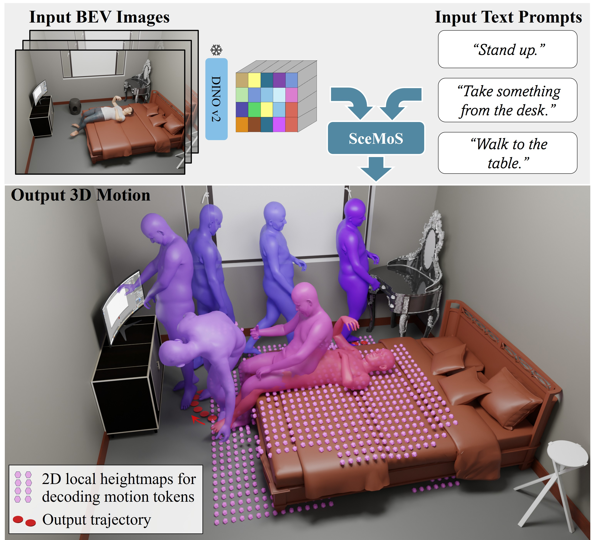
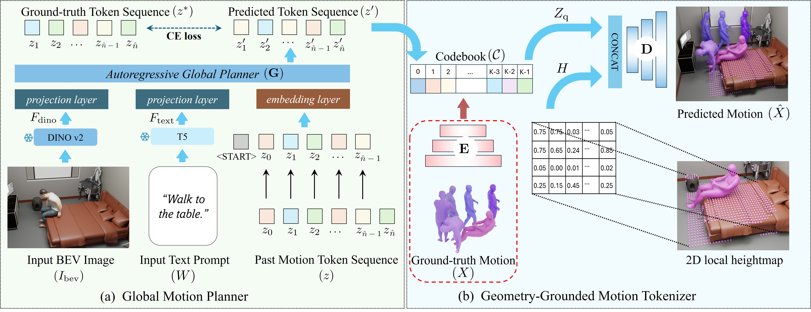

1German Research Center for Artificial Intelligence (DFKI),
2Max Planck Institute for Informatics,
3Saarland Informatics Campus,
4University of Hong Kong
This work is accepted at CVPR 2026.

SceMoS uses 2D scene cues and text instructions to generate physically consistent and realistic 3D motions.
Abstract
Synthesizing text-driven 3D human motion within realistic scenes requires learning both semantic intent (“walk to the
couch”) and physical feasibility (e.g., avoiding collisions).
Current methods use generative frameworks that simultaneously learn high-level planning and low-level contact reasoning, and rely on computationally expensive 3D scene
data such as point clouds or voxel occupancy grids. We propose SceMoS, a scene-aware motion synthesis framework that shows that structured 2D scene representations
can serve as a powerful alternative to full 3D supervision in physically grounded motion synthesis. SceMoS disentangles global planning from local execution using lightweight
2D cues and relying on (1) a text-conditioned autoregressive global motion planner that operates on a
bird’s-eye-view (BEV) image of the scene taken from an elevated corner, encoded with DINOv2 features, as the scene representation, and (2) a
geometry-grounded motion tokenizer trained via a conditional VQ-VAE, that uses 2D local scene heightmap, thus
embedding surface physics directly into a discrete vocabulary. This 2D factorization reaches an efficiency-fidelity
trade-off: BEV semantics capture spatial layout and affordance for global reasoning, while local heightmaps enforce
fine-grained physical adherence without full 3D volumetric reasoning. SceMoS achieves state-of-the-art motion realism
and contact accuracy on the TRUMANS benchmark, reducing the number of trainable parameters for scene encoding by over 50%, showing that 2D scene cues can effectively ground 3D human-scene interaction.
Approach

Overview of SceMoS Framework.
SceMoS disentangles text-conditioned scene-aware human motion synthesis into two stages.
(a) The global motion planner predicts discrete motion tokens from text input and DINOv2 scene features extracted from a BEV image.
(b) Our geometry-grounded motion tokenizer learns a scene-aware motion vocabulary for mapping these discrete tokens to a continuous 3D human motion.
We use 2D local heightmaps around poses to condition our interaction decoder (top right) for fine-grained interaction generation.
The red dotted line implies used only during training. Blue arrows follow through the inference pipeline.
✨ Results ✨
Input Text Prompt: "Sit on the small sofa."
Input Text Prompt: "Pickup something from the table."
Input Text Prompt: "Walk to the table."
Input Text Prompt: "Sit on the chair."
BibTex
@InProceedings{ghosh2026scemos,
title={SceMoS: Scene-Aware 3D Human Motion Synthesis by Planning with Geometry-Grounded Tokens},
author={Ghosh, Anindita and Golyanik, Vladislav and Komura, Taku and Slusallek,
Philipp and Theobalt, Christian and Dabral, Rishabh},
journal={arXiv preprint arXiv:26xx.xxxxx},
year={2026}
}